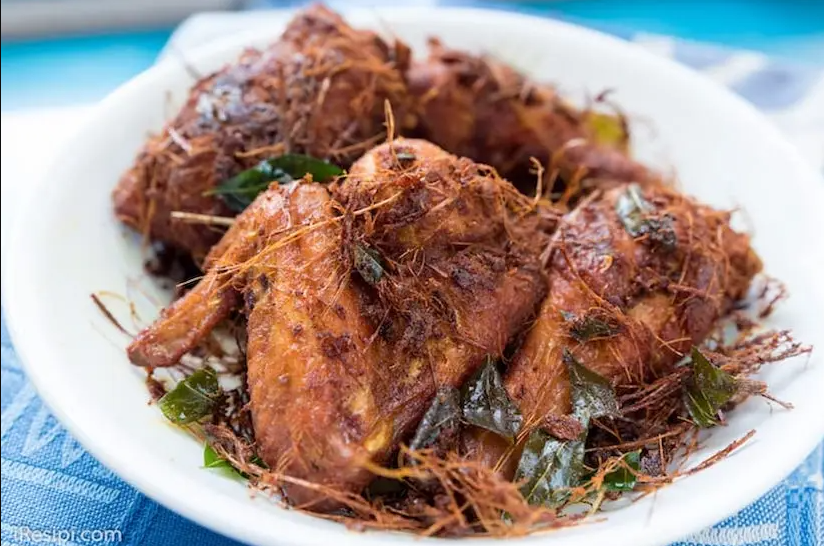

Fried Chicken Recipe

Spiced fried chicken best paired with Nasi Lemak!
Literally translated from Malay, ayam goreng berempah means ‘spiced fried chicken’.
Infused with a mix of herbs and spices, this fried chicken dish is incredibly crunchy, juicy and accompanied with heaps of crispy addictive crumbs.
Ingredients:
This recipe will be for a serving for TWO.
- 2 Shallots
- 4 Garlic cloves
- 3cm Ginger
- 3cm Galangal
- 10 dried chilli peppers
- 2 stalks lemongrass
- 3cm fresh tumeric
- 1tbsp coriander powder
- 1/2 tbsp fennel seeds
- 1/2 tsp cumin powder
- 1/2 tbsp curry powder
- 1 tsp salt
- 500g chicken meat
- 3 stalks curry leaves
- Oil (enough to submerge the chicken depending on your pot)
Steps:
- Blend galangal, shallots, garlic, ginger, dried chillies, lemongrass and turmeric into a paste
- In a pan, toast fennel seeds over medium heat until fragrant. Then, pound fennel seeds into fine powder.
- Mix coriander powder, fennel powder, cumin powder, curry powder and salt to blended ingredients.
- Coat chicken evenly with the mixed aromatics paste and some curry leaves. Marinate for at least 30 minutes.
- In a cast iron pot, heat oil over medium heat. When bubbles appear around the wooden chopstick when it is dipped into the oil, add the chicken pieces into the pot.
- Place the lid on and check every 3-4 minutes to prevent chicken pieces from burning. Fry till golden brown.
Return to Home Page